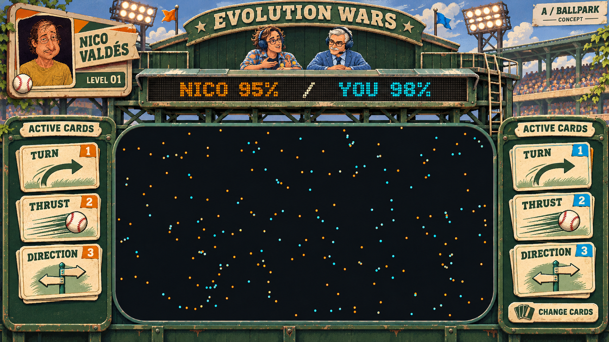
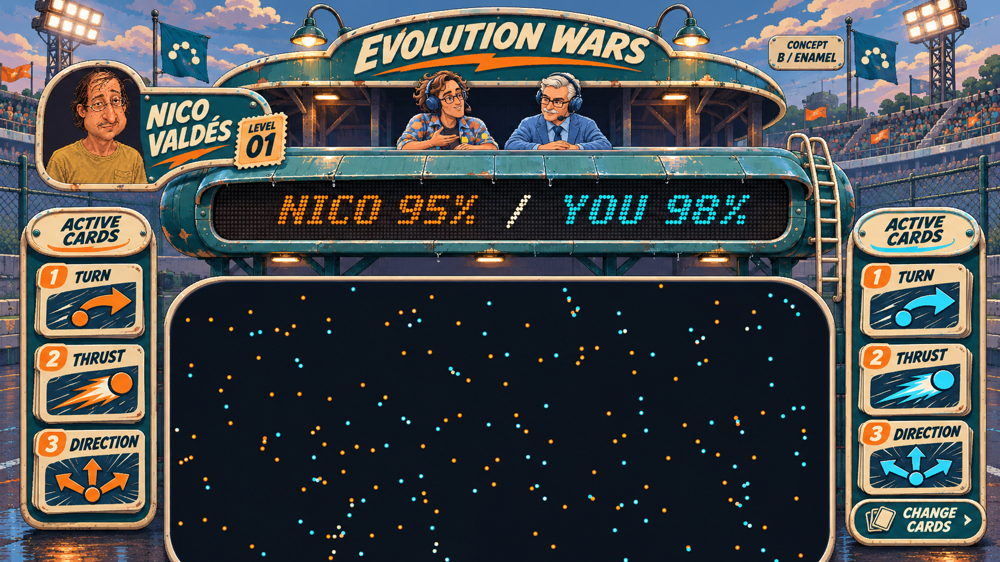
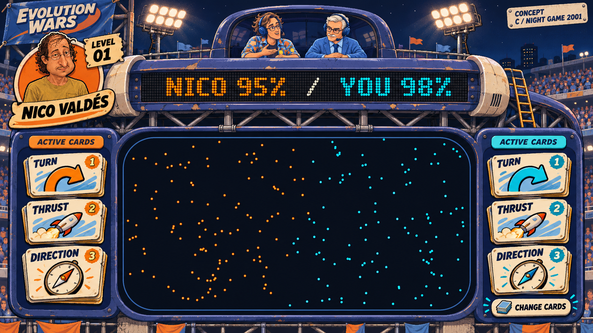

Trois directions pour Evolution Wars
Maquettes d'ambiance, pas des captures du jeu. On peut mélanger les éléments : enseigne B, cartes C, etc. Le décor final devra laisser la place aux graphes de survie et aux commentaires. Les chiffres 1 / 2 / 3 sur les cartes sont illustratifs.
A — Vieux stade vert
Métal vert, peinture crème, passerelle et échelle. Les cartes évoquent des cartes de collection sportives.

B — Enseigne arrondie
Métal émaillé, comme une vieille enseigne peinte brillante : grands arrondis, auvent et lampes. Lettres inclinées plus expressives.

C — Stade arcade de nuit
Structure tubulaire, projecteurs, cartes illustrées plus affirmées. Orange pour Nico et ses agents, bleu pour nous.

Les vraies fontes, utilisables dans le jeu
Les lettres des maquettes sont dessinées par l'IA. Ces échantillons utilisent de vrais fichiers de fontes, chargés localement. Une fonte expressive pour les noms et les cartes ; des caractères simples pour les statistiques ; la matrice de points pour le ruban.
● NICO — #F58B23 ● NOUS — #24D0FF
Interaction PvP envisagée : cliquer une carte active → ouvrir le deck en superposition → choisir sa remplaçante → retrouver le match. Le match continue derrière. Le coût, les délais et les règles de remplacement restent à définir. Cette page ne modifie pas la simulation.
Images : outil imagegen intégré. Prompts et références. Fontes : Google Fonts, licences OFL conservées dans fonts/. Toutes les images sont consultables hors ligne.